Vídeos das Aulas Teóricas e de outro temas
Aqui irão ser colocadas ligações para todos os vídeos das aulas teóricas (que serão pré-gravadas). Entre parênteses estão o dia da última aulas teórica associada esses vídeos.
Clicar na imagem ou no título para aceder ao vídeo. Os vídeos estão publicados por ordem cronológica crescente.
| Playlist com todos os vídeos |
| #01 - Introdução à UC (28m08s) | |
| Slides incluídos: 1 a 12 de "0 - Introdução". | |
 |
Apresentação da unidade curricular: frequência, avaliação, objectivos, programa, funcionamento das aulas. |
| #02 - Análise Assintótica: Introdução e Motivação (49m33s) | |
| Slides incluídos: 1 a 17 de "1 - Análise Assintótica". | |
| 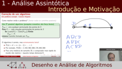 | Conceitos de algoritmo, instância, correção e eficiência temporal ou espacial; o problema do caixeiro-viajante (TSP): uma possível heurística não optimal e uma solução correta gerando todas as hipóteses; taxa de crescimento de um algoritmo e um exemplo usando permutações. |
| #03 - Análise Assintótica: Notação "Big O" (48m09s) | |
| Slides incluídos: 18 a 39 de "1 - Análise Assintótica". | |
| O modelo de Random Access Machine (RAM) para contagem de operações simples num programa; tipos de análise: pior caso e caso médio; fundamentos de análise assintótica: conceito de taxa de crescimento e notação O, Ω Θ e regras práticas; funções mais comuns: nomes, relações de dominância e exemplos de algoritmos. | |
| #04 - Análise Assintótica: Previsão de Tempo de Execução (30m46s) | |
| Slides incluídos: 40 a 55 de "1 - Análise Assintótica". | |
| 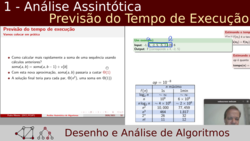 | Previsão do tempo de execução de um algoritmo: com acesso a implementação e tempo de execução numa instância e antes mesmo de ter implementação; alguns exemplos e regras práticas. |
| #05 - Análise Assintótica: Complexidade de Programas (46m36s) | |
| Slides incluídos: 56 a 79 de "1 - Análise Assintótica". | |
| 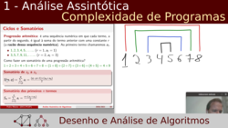 | Análise de ciclos (e somatórios); progressões aritméticas; intuições sobre complexidade de ciclos; análise de funções recursivas (e recorrências); a estratégia de dividir para conquistar; estudo detalhado do algoritmo do mergesort e sua árvore de recorrências; outras recorrências (máximo com dividir para conquistar ou tail recursion; pesquisa binária). |
| #06 - Ordenação: Motivação e Complexidade Ótima (22m21s) | |
| Slides incluídos: 1 a 5 de "2 - Ordenacao". | |
| 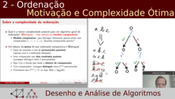 | A ordenação como passo fundamental de muitos algoritmos; esboço de prova do "lower bound" de n log n para algoritmos de ordenação no modelo comparativo. |
| #07 - Ordenação: Algoritmos Comparativos e Não Comparativos (37m04s) | |
| Slides incluídos: 6 a 18 de "2 - Ordenacao". | |
| 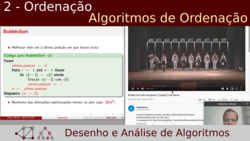 | Algoritmos comparativos: bubblesort, selectionsort, insertionsort, mergesort e quicksort (naive e aleatorizado); algoritmos não comparativos: counting sort e radixsort. |
| #08 - Ordenação: Aplicações e Pesquisa Binária Direta (27m35s) | |
| Slides incluídos: 19 a 24 de "2 - Ordenacao". | |
| 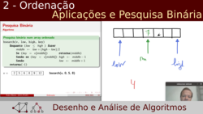 | Exemplos de aplicação de ordenação; Algoritmo de pesquisa binária direto num array ordenado. |
| #09 - Ordenação: Pesquisa Binária Indirecta (45m07s) | |
| Slides incluídos: 25 a 37 de "2 - Ordenacao". | |
| 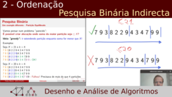 | Variantes de pesquisa binária; "binary search the answer" como pesquisa binária indireta, no espaço de soluções; problema da partição equilibrada; método de bisseção. |
| #10 - Algoritmos Greedy: Introdução (35m24s) | |
| Slides incluídos: 1 a 10 de "3 - Algoritmos Greedy". | |
| Algoritmos greedy (ávidos/gananciosos/gulosos); o problema do troco de moedas; propriedades de um algoritmo greedy: subestrutura ótima e escolha greedy. | |
| #11 - Algoritmos Greedy: Exemplos (1h05m02s) | |
| Slides incluídos: 11 a 39 de "3 - Algoritmos Greedy". | |
| 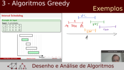 | Algoritmos greedy para problemas práticos: fractional knapsack, planeamento de intervalos, cobertura mínima. |
| #12 - Programação Dinâmica: Introdução (1h03m41s) | |
| Slides incluídos: 1 a 35 de "4 - Programação Dinâmica". | |
| 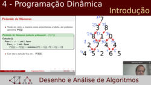 | Motivação para programação dinâmica (PD): números de fibonacci e pirâmide de números; propriedades de um algoritmo de PD: subestrutura ótima e subproblemas coincidentes; metodologia para resolução de um problema com PD: caracterizar, definição recursiva, cálculo da solução de todos os problemas e eventual reconstrução da solução ótima. |
| #13 - Programação Dinâmica: Exemplos (1h16m56s) | |
| Slides incluídos: 36 a 61 de "4 - Programação Dinâmica". | |
| 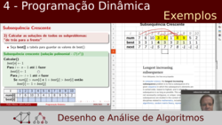 | Aplicação de PD em problemas: maior subsequência crescente, mínimo troco de moedas, contagem de caminhos, jogos para 2 jogadores, distância de edição. |
| #14 - Árvores Binárias de Pesquisa: Introdução (45m26s) | |
| Slides incluídos: 1 a 23 de "5 - Árvores Binárias de Pesquisa Equilibradas". | |
 |
Conceito de Árvores Binárias de Pesquisa: terminologia, pesquisa, inserção, remoção e visualização; complexidade temporal e relação entre altura e equilíbrio; estratégias de balanceamento. |
| #15 - Árvores Binárias de Pesquisa: AVL + Red Black Trees (1h15m02s) | |
| Slides incluídos: 24 a 54 de "5 - Árvores Binárias de Pesquisa Equilibradas". | |
| 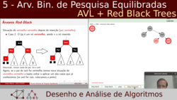 | Operação de rotação em árvores; AVL Trees: conceito, invariantes, operações, rebalanceamento, visualização; Red-Black trees: conceito, invariantes, operações, rebalanceamento, visualização. |
| #16 - Grafos: Introdução (52m01s) | |
| Slides incluídos: 1 a 23 de "6 - Grafos: Introdução". | |
| Grafos: conceito, exemplos e terminologia; representação de grafos: matrizes e listas de adjacência; visão sobre os algoritmos de grafos que serão dados; exemplos de aplicações. | |
| #17 - Grafos: Pesquisa em Profundidade I (1h03m15s) | |
| Slides incluídos: 1 a 15 de "7 - Grafos: Pesquisa". | |
| 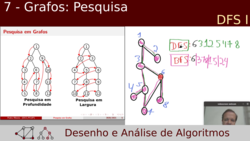 | Motivação para pesquisa em grafos; comparação de DFS com BFS; implementação de dfs com live coding e contagem de componentes conexos; grafos implicítios; flood fill com live coding. |
| #18 - Grafos: Pesquisa em Profundidade II (1h14m17s) | |
| Slides incluídos: 16 a 41 de "7 - Grafos: Pesquisa". | |
| 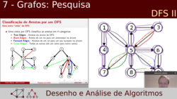 | Aplicações de DFS com live coding: ordenação topológica e deteção de ciclos; conceito de árvore de DFS e classificaçãos de arestas: "tree", "backward", "forward" e "cross" edges; algoritmo de Tarjan para identificação de componentes fortemente conexos; algoritmo para descoberta de pontos de articulação. |
| #19 - Grafos: Pesquisa em Largura (51m42s) | |
| Slides incluídos: 42 a 52 de "7 - Grafos: Pesquisa". | |
 |
Conceito de pesquisa em largura (BFS); esqueleto e implementaçáo de BFS, com live coding; cálculo de distâncias em grafos não pesados usando BFS; BFS em grelhas bidimensionais; BFS com origem múltipla (problema "nuvem de cinzas"); BFS para pesquisa de estados em jogos (problema "quadrados mágicos"). |
| #20 - Grafos: Distâncias e Algoritmo de Dijkstra (1h29m50s) | |
| Slides incluídos: 1 a 14 de "8 - Grafos: Distâncias Mínimas". | |
| Distâncias mínimas em grafos: conceito e motivação; BFS e grafos não pesados; problemas SSSP e APSP; algoritmo de Dijkstra: conceito e intuição, visualização para uma instância, complexidade, implementação com livecoding. | |
| #21 - Grafos: Algoritmos de Bellman-Ford e Floyd-Warshall (38m03s) | |
| Slides incluídos: 15 a 34 de "8 - Grafos: Distâncias Mínimas". | |
| 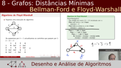 | Porque falha o algoritmo de Dijkstra com pesos negativos; algoritmo de Bellman-Ford: intuição, visualização, pseudo-código e complexidade; algoritmo de Floyd-Warshall: intuição, visualização, pseudo-código, complexidade e adaptação para fecho transitivo: variações e o exemplo da distância maximin. |
| #22 - Grafos: Árvores de Suporte de Custo Mínimo (1h20m19s) | |
| Slides incluídos: 1 a 25 de "9 - Grafos: Árvores de Suporte de Custo Mínimo". | |
| 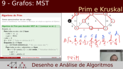 | Conceito de árvore de suporte e árvore de suporte de custo mínimo (MST); esqueleto; esqueleto de um algoritmo greedy para MSTs; algoritmo de prim: conceito, exemplos, implementação e complexidade (includindo live coding); algoritmo de kruskal: conceito, exemplos, implementação e complexidade; estruturas de dados para union-find (disjoint-sets) e heurísticas union by rank e path compression. |